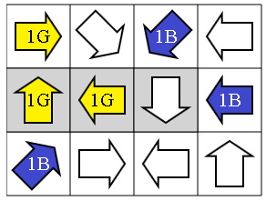
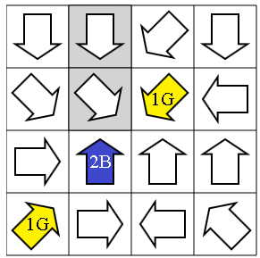
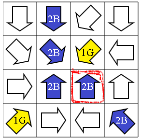
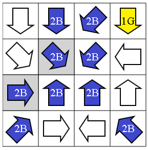

Innan vi börjar kan vi konstatera att problemet är "symmetriskt" med avseende på färgerna gul och blå. Om man har en lösning och sedan byter alla gula pilar mot blå, och alla blå mot gula, så är det fortfarande en lösning. Från denna anmärkning kan man konstatera att man kan börja med en pil av godtycklig färg utan att behöva riskera att det visar dig vara ett dåligt val.
I fortsättningen börjar vi alltid med att placera ut en blå pil.
Vi testar olika sätt att börja, och hoppas hitta en som "tvingar" oss fortsätta att lägga ut pilar så att vi aldrig behöver tveka.
Första försöket. Antag först att vi börjar genom att fylla den översta raden. Det finns två olika sätt att fylla den enligt reglerna:
|
Första sättet. |
|
Andra sättet. |
Eftersom det finns två möjligheter kan man inte vara säker på vilken det är bäst att utgå från. Låt oss försöka på ett annat sätt.
Andra försöket. Antag nu att börjar genom att fylla den nedersta raden. Även där finns det två sätt som båda uppfyller reglerna :
|
Första sättet. |
|
Andra sättet. |
Eftersom det finns två möjligheter kan man inte heller här vara säker på vilken det är bäst att utgå från. Låt oss försöka på ett tredje sätt.
Tredje försöket. Antag nu att vi börjar genom att fylla i den stigande diagonalen, vilket är intressant eftersom den innehåller två pilar som pekar mot varandra.
|
Låt oss som vanligt börja med en blå pil. |
 |
Om man sedan ovanför till höger försöker lägga en andra blå pil tar det stopp: Den tredje pilen i diagonalen kan varken vara blå eller gul, eftersom den pekar mot två blå pilar. |
|
Eftersom den andra pilen alltså inte kan vara blå, måste den vara gul. Likaså måste den tredje vara blå, eftersom den första blå pilen i hörnet måste peka mot en annan blå pil. |
|
Den gula pilen mitt i digaonalen tvingar fram två andra gula pilar. |
|  |
I kolumnen till höger kan pilen i mitten inte vara gul, eftersom den pekar mot minst två gula pilar. Den måste därför vara blå. |
|
Den senast tillagda blå pilen tvingar oss att lägga till ytterligare två blå pilar. |
|
På nedersta raden kan den andra pilen inte vara blå, eftersom den tredje då skulle peka mot två blå pilar. Den andra pilen måste alltså vara gul. |
|
Denna senast tillagda gula pil tvingar fram två nya gula pilar. |
 |
Den sista pilen måste vara blå, eftersom pilen i övre högra hörnet bara får peka på en gul pil.
Här har vi lösningen! |
I detta fall är problemet inte symmetriskt, dvs bara en färg på första pilen kan vara rätt. Det är klokt att börja med att försöka fylla en rad med många "begränsningar", t.ex. pilar som pekar mot varandra. Låt oss se på den stigande diagonalen, där pilen nederst till vänster kan vara gul eller blå.
Första försöket. Vi testar först med att göra den gul:
|
Pilen ett steg ovanför till höger kan inte också vara gul, eftersom ytterligare nästa pil då pekar mot två gula rutor. Den andra pilen måste alltså vara blå.
Den tredje pilen på diagonalen pekar mot en gul och en blå pil, och måste alltså vara gul. |
 |
Den blå pilen pekar mot två andra pilar som då också måste vara blå. |
|
Den blå pil som pekar snett ner åt höger, kräver på samma sätt två ytterligare blå pilar. |
 |
I detta läge blir det stopp, eftersom den inramade blå pilen inte kan peka mot två blå pilar. |
Andra försöket. Eftersom pilen nederst till vänster inte kan vara gul måste den alltså vara blå.
 |
Låt oss alltså börja så. |
|
Om den tredje pilen längs diagonalen görs gul blir det åter stopp: Man tvingas göra den andra pilen gul, och sedan finns det inte plats för två blå för den första i hörnet att peka på. |
 |
Den tredje pilen ska alltså vara blå. |
|
Och eftersom den ska peka mot två blå pilar måste den andra alltså göras blå.
Sedan, för att undvika att nedre vänstra pilen pekar mot tre blå pilar, så måste den i övre högra hörnet göras gul. |
|
Den andra blå pilen kräver två nya blå pilar. |
|
En av dessa kräver ytterligare två, |
|  |
och för att det ska stämma kan man lägga dit ytterligare två blå pilar. |
|
Tredje raden kan inte ha fyra blå pilar, dvs den längst till höger måste vara gul.
Eftersom den redan pekar mot en annan gul pil måste den högraste pilen i andra raden vara blå. |
|
Denna pekar redan mot två blå pilar, så den första pilen i andra raden måste vara gul. |
|
De två motriktade pilarna i nedersta raden måste alltså vara gula, |
|
liksom den allra sista pilen längst uppe till vänster.
Här har vi nu en komplett lösning! |
Det är datavetenskap!